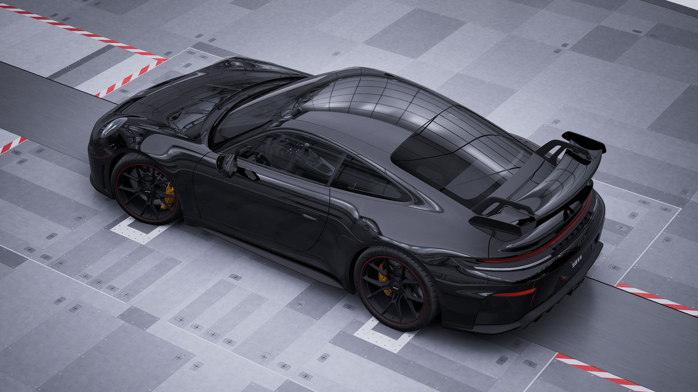
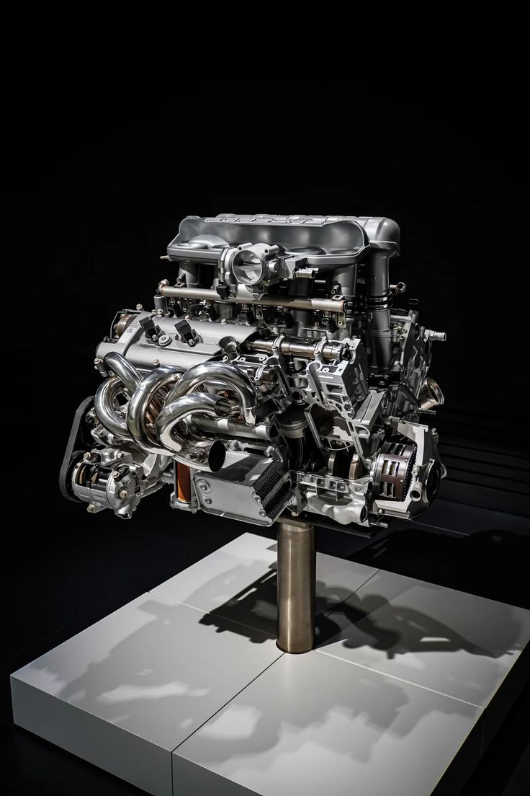
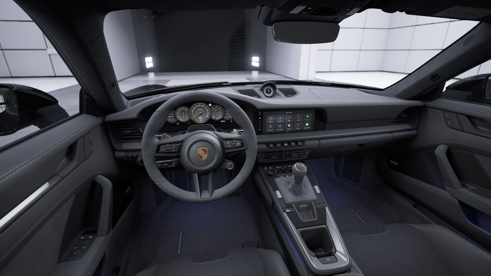

Detalhes do Modelo

O Porsche 911 GT3 RS possui motor boxer de seis cilindros e 4,0 litros, com mais de 500 cavalos de potência. Com aerodinâmica ativa, suspensão ajustável, construção leve e freios de alto desempenho, foi desenvolvido para oferecer máxima performance e precisão, especialmente em pistas.
Especificações Técnicas

- Motor: 4.0 litros, seis cilindros boxer
- Potência: Mais de 500 cavalos
- Transmissão: Manual de seis marchas ou automática de dupla embreagem
- Aceleração: 0 a 100 km/h em menos de 3,5 segundos
- Velocidade Máxima: Acima de 320 km/h
- Peso: Aproximadamente 1.430 kg
Recursos e Tecnologias

O Porsche 911 GT3 RS combina tecnologia de alto desempenho, com aerodinâmica ativa, suspensão ajustável, controle de tração e estabilidade e freios de alta performance. O interior apresenta bancos esportivos, materiais de alta qualidade e recursos modernos de conectividade, mantendo o foco na experiência de condução.